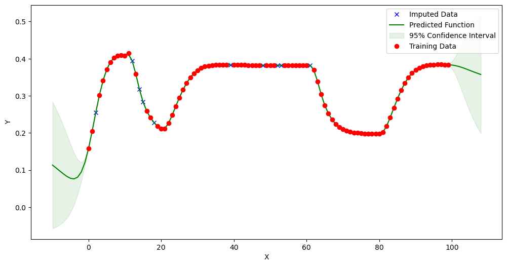
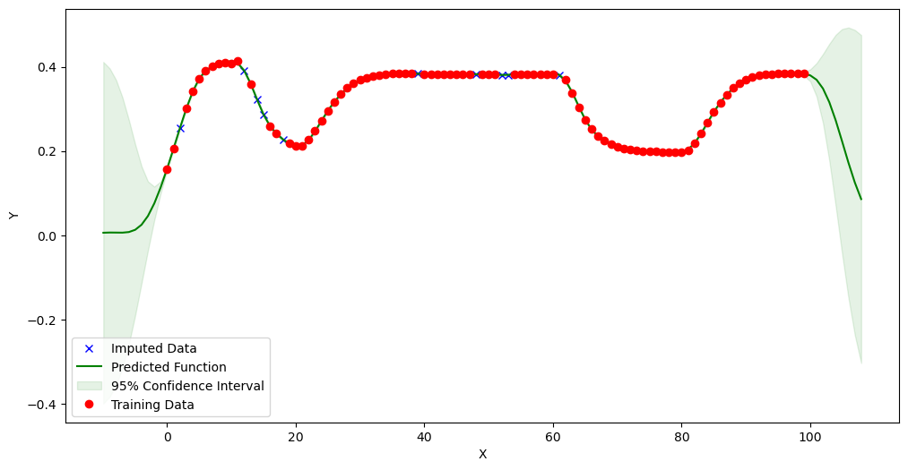
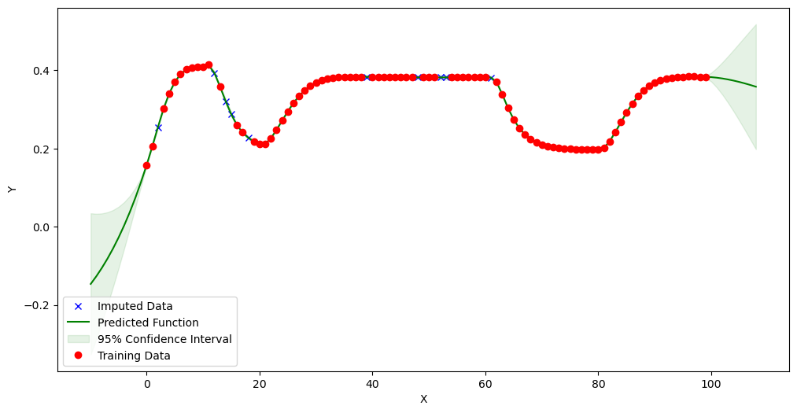

Imputing Missing Values using Gaussian Process¶
[1]:
from mimic.data_imputation.impute_GP import GPImputer
import pandas as pd
import numpy as np
WARNING:tensorflow:From c:\ProgramData\anaconda3\envs\MIMIC\Lib\site-packages\tf_keras\src\losses.py:2976: The name tf.losses.sparse_softmax_cross_entropy is deprecated. Please use tf.compat.v1.losses.sparse_softmax_cross_entropy instead.
WARNING:tensorflow:From c:\ProgramData\anaconda3\envs\MIMIC\Lib\site-packages\tensorflow_probability\python\internal\backend\numpy\_utils.py:48: The name tf.logging.TaskLevelStatusMessage is deprecated. Please use tf.compat.v1.logging.TaskLevelStatusMessage instead.
WARNING:tensorflow:From c:\ProgramData\anaconda3\envs\MIMIC\Lib\site-packages\tensorflow_probability\python\internal\backend\numpy\_utils.py:48: The name tf.control_flow_v2_enabled is deprecated. Please use tf.compat.v1.control_flow_v2_enabled instead.
[2]:
data_to_infer = pd.read_csv(
r"simulations0.csv", header=None, sep=",")
[3]:
# Fraction of rows to remove
fraction = 0.1
# Randomly select fraction of y-values
missing_y = data_to_infer.iloc[:, 1].sample(frac=fraction)
# Set the selected y-values to NaN
data_to_infer.loc[missing_y.index, 1] = np.nan
# Now data_to_infer has 10% of y-values in the second column set to NaN
[4]:
data_to_infer.iloc[:, 1].isnull().sum()
[4]:
10
[5]:
new_dataset = GPImputer().impute_missing_values(data_to_infer, [0], [1], 1)
Model: GPR
Best kernel: <class 'gpflow.kernels.stationaries.RationalQuadratic'>
BIC: 689.6450387507102

[6]:
new_dataset.iloc[:, 1].isnull().sum()
[6]:
0
[7]:
new_dataset2 = GPImputer().impute_missing_values(
data_to_infer, [0], [1], 1, 'RBF')
Model: GPR
Best kernel: <class 'gpflow.kernels.stationaries.SquaredExponential'>
BIC: 605.1424898219141

[8]:
new_dataset2 = GPImputer().impute_missing_values(
data_to_infer, [0], [1], 1, 'M32')
Model: GPR
Best kernel: <class 'gpflow.kernels.stationaries.Matern32'>
BIC: 669.0285857579458
